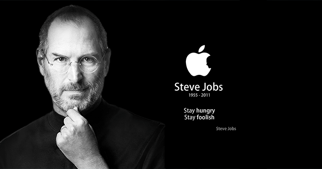

Steve Jobs

A Photo of The Legend Tech Enginee Steve Jobs
A Photo of The Legend Tech Enginee Steve Jobs
- February 24, 1955: Steven Paul Jobs is born in San Francisco to Joanne Carole Schieble and Abdulfattah Jandali. The then-unmarried couple give up their son to adoption. Paul and Clara Jobs become Jobs' non-biological parents.
- 1970: Meets future Apple co-founder Steve Wozniak through a friend. In Wozniak's 2006 autobiography, "iWoz," he notes that the two "hit it off" immediately, despite their four-year age difference
- 1976: Co-founds Apple Computer with Wozniak and Ronald Wayne. That same year, the company sells the Apple I in the form of a kit that sells for $666.66.
- December 12, 1980: Apple goes public, putting Jobs' net worth north of $200 million.
- February 3, 1986: For $10 million, buys the Graphics Group division of Lucasfilm that becomes Pixar Animation Studios.
- May 6, 1998: Introduces the iMac, which becomes commercially available in August.
- March 24, 2001: Apple ships the the first version of Mac OS X, code-named Cheetah.
- January 11, 2005: Apple introduces an iPod Shuffle. "iPod Shuffle is smaller and lighter than a pack of gum and costs less than $100...With most flash memory music players, users must use tiny displays and complicated controls to find their music; with iPod Shuffle you just relax, and it serves up new combinations of your music every time you listen."
- January 9, 2007: Drops "Computer" from Apple's name. Introduces the iPhone: "iPhone is a revolutionary and magical product that is literally five years ahead of any other mobile phone...We are all born with the ultimate pointing device--our fingers--and iPhone uses them to create the most revolutionary user interface since the mouse." Apple owns 19.1 percent of the smartphone market as of August 2011, having shipped 108 million iPhones worldwide as of March 2011.
- August 24, 2011: Resigns from Apple CEO post; becomes chairman.
“You can’t connect the dots looking forward; you can only connect them looking backward. So you have to trust that the dots will somehow connect in your future.” -Steve Jobs
If you have time, you should read more about this incredible human being on hisWikipedia entry.